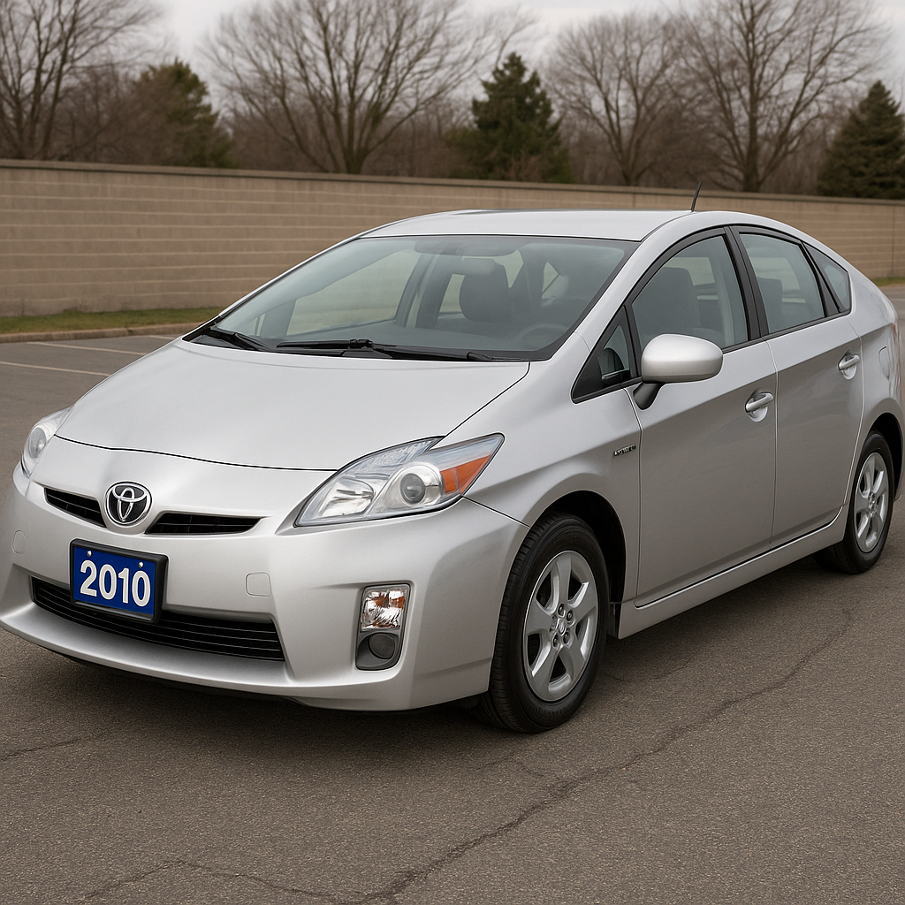

Lab 5 - Variables and Datatypes
Challenge
Initialize variables for the make, model, year and color of your primary mode of transportation. Output this data from lab.js to the html, and style it.
Problems
Shortly after finishing this page, I had to pack up and drive to Portland. Upon returning, I was obsessively sculpting logs of Stratacut animation. After a few weeks of disorganized chaos, I have returned to wrap this up.
Reflection
- I was shocked to see how similar the angle in the generated image of the Prius looked to the first result on Google images
- In the future, I should submit whatever I have, if I am going to be interrupted. Otherwise, I should just push through and finish the task
Results
Script Output
